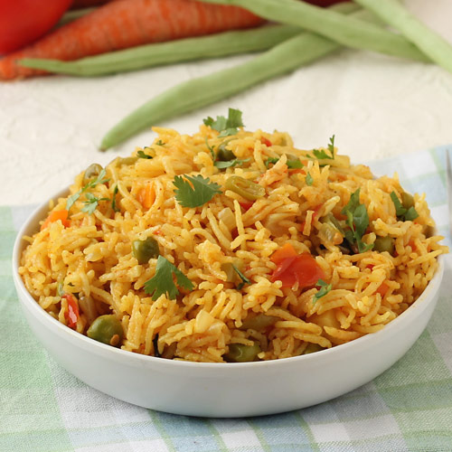

Pulao
Home

Description
Pulao is a simple and flavorful rice dish cooked with spices, vegetables, and basmati rice.
It is light, aromatic, and easy to prepare.
Ingredients
- 1 cup basmati rice
- 2 cups water
- 1 onion (sliced)
- 1 carrot (chopped)
- Green peas
- 2 tbsp oil or ghee
- 1 bay leaf
- 1 cinnamon stick
- 2 cloves
- Salt to taste
Steps
- Wash and soak rice for 15–20 minutes.
- Heat oil or ghee in a pan.
- Add whole spices (bay leaf, cinnamon, cloves) and sauté.
- Add onions and fry until golden.
- Add vegetables and cook for a few minutes.
- Add soaked rice and mix gently.
- Add water and salt, then bring to a boil.
- Cover and cook on low flame until rice is done.
- Fluff with a fork and serve hot.